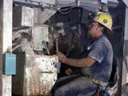

|
|
|
|
|
|
Quiz Format |
|
|
|
|
| Mining Economy Quiz
 Directions: Read the statement and choose the most appropriate response. You may click the helpful hints button at any time. Good luck!
1. Employment opportunities that are directly related to the mining industry include ***. a. electricians
2. Of the following mining occupations, only the *** requires a university degree.
a. environmental sampler
3. Geologists concentrate on ***.
a. the study of Earth's history
4. If you were employed at a uranium mine to take samples in the mill during various stages of ore processing, you would be known as a *** sampler.
a. geological
5. The development of a uranium mine in northern Saskatchewan results in the creation of jobs, both directly involved with the mine and indirectly as a result of families moving to the mine area. All of the following jobs except *** are examples of the indirect creation of jobs.
a. mine manager
6. The person who is responsible for coordination of training programs, public relations, security, and safety is referred to as ***.
a. employee relations personnel
7. Economic benefits of mining in Saskatchewan include ***.
a. greater funds made available for health care in the rural communities
8. A computer programmer in the mining industry would be classified as a/an *** job.
a. administrative
9. A borer operator would most likely work at a/an *** mine operation.
a. uranium
10. The main difference in the job of a geologist compared to that of a mine engineer is that the mine engineer ***.
a. must analyse ore samples in order to determine the potentiality of mine development
|
|
|
|